clear
Silicone Soul은 가상 사람들과의 감정적 교감을 나누도록 만들어진 웹사이트입니다.
이 웹사이트를 이용하기 위한 가이드는 다음과 같습니다.
1. 가상 사람의 얼굴을 뚫어지게 쳐다보십시오.
2. 가상 사람의 성격, 취미, 관심사를 이해하십시오.
3. 가상 사람이 하는 말을 주의깊게 들으십시오.
4. 웹사이트를 떠난 후 그 사람에 대해 한 번 더 생각하십시오.
그들은 이곳에서 평생 당신을 기다릴 것입니다... 평생...
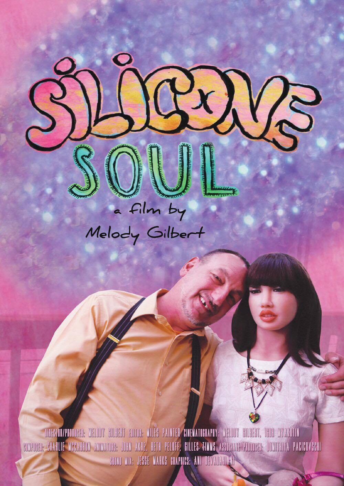
inspired by ≪Silicone Soul≫(2019)
| 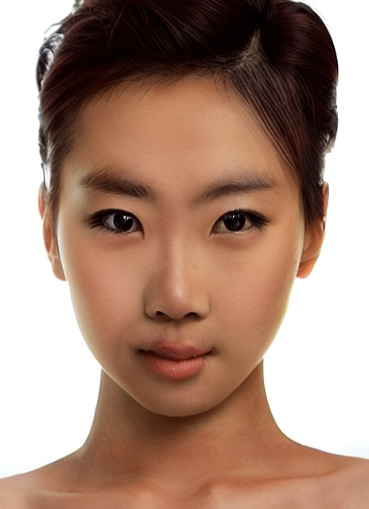 |
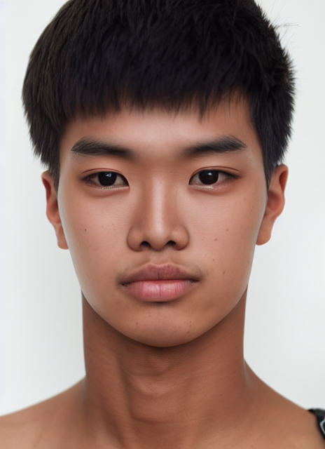 |
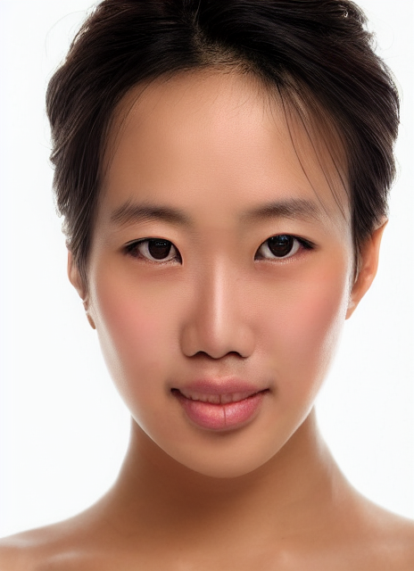 |
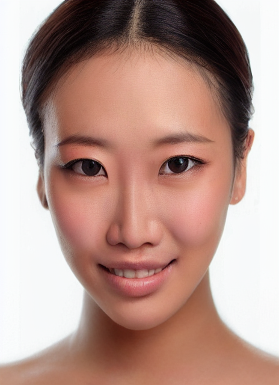 |
|
| 지영 |
재민 |
지원 |
민지 |
소연 |
|
|
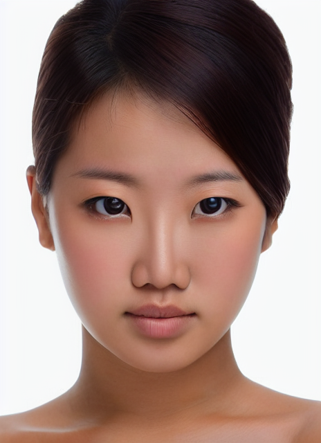 |
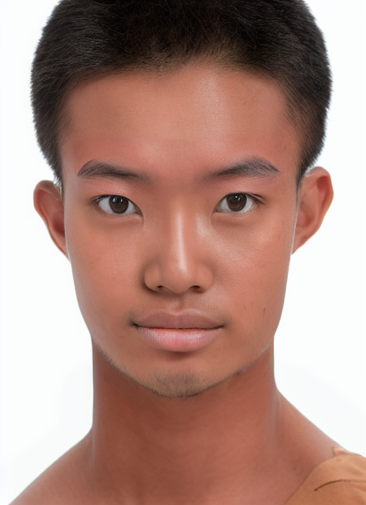 |
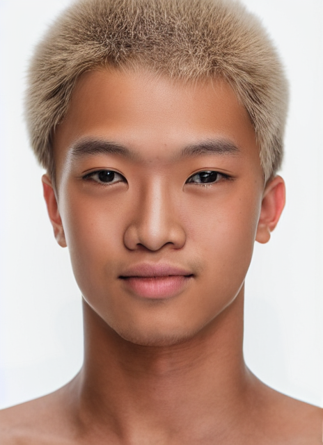 |
| 지현 |
준호 |
선영 |
성민 |
태욱 |
| 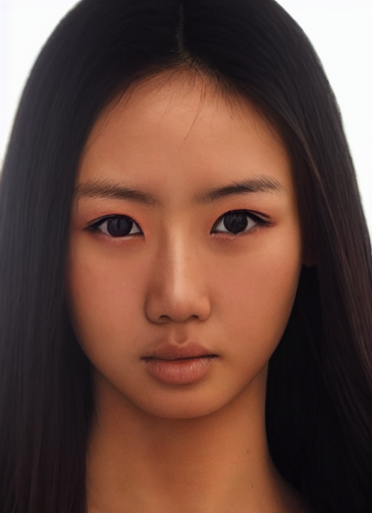 |
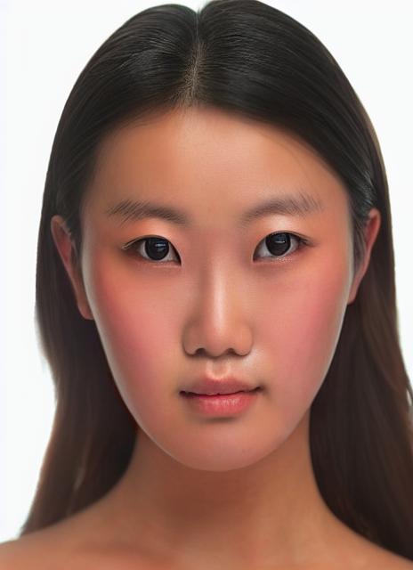 |
|
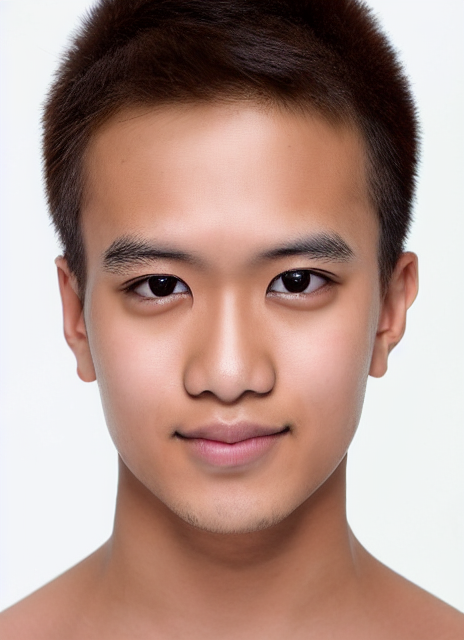 |
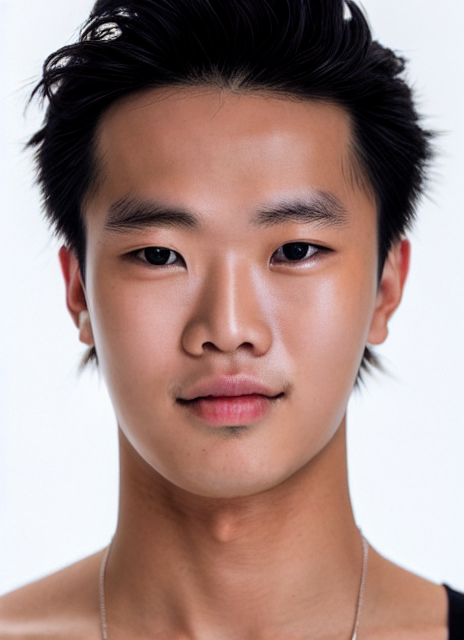 |
| 지은 |
민주 |
미라 |
현우 |
영재 |
지영은 활발하고 밝은 성격을 가지고 있습니다. 주변 사람들과 소통하는 것을 즐기며 항상 긍정적인 에너지를 가지고 있습니다. 친절하고 배려심이 깊어, 주변 사람들에게 도움을 주는 것을 즐깁니다. 열정적이며 목표를 달성하기 위해 노력하는 힘을 가지고 있습니다. 자신의 꿈을 추구하며 자기계발에 힘쓰고 있습니다. 전통과 현대 문화에 관심을 가지며 한국의 아름다운 역사와 문화를 자랑스럽게 생각합니다.